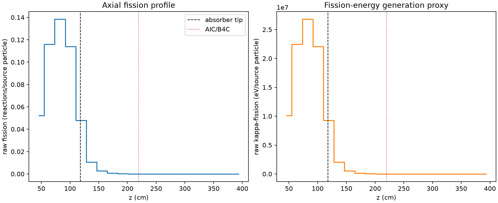
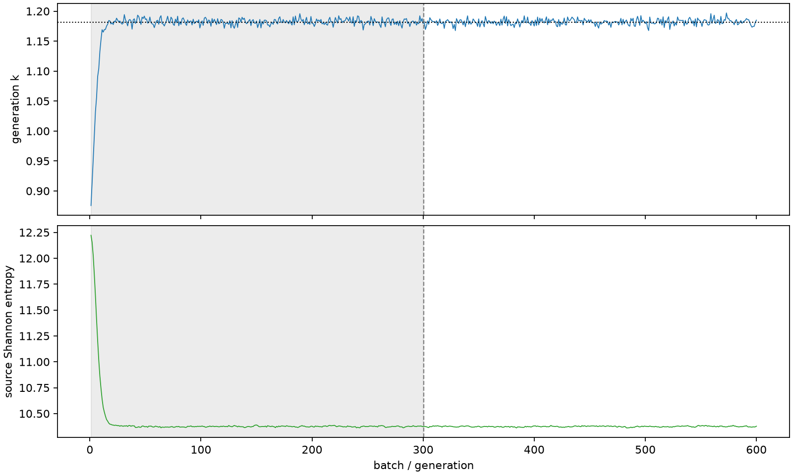

| field | value |
|---|---|
| experiment | V2-STAGE_256_OGRENCI_04-0019 |
| k | 1.1818165717217846 |
| MC standard error | 0.0001796654674929414 |
| seconds | 977.0995044090014 |
| acceptance | not_assessed |
| convergence | review_required |
Completed is output integrity only; physical and statistical review required. Zero tallies do not prove zero production or zero uncertainty.
| diagnostic | value |
|---|---|
| geometric fuel voxels | 5280 |
| zero fission tally voxels | 1712 |
| low signal fuel voxels | 2828 |
| low signal fission share | 0.00010568709546801653 |
| low signal kappa share | 0.00010573625927111175 |
| important fission share | 0.9503347363040483 |
| previous filter included | 2452 |
| duration estimate s | 1562.5173488400023 |
| actual minus estimate s | -585.417844431001 |
| fission relative MC error | statistics |
|---|---|
| all_geometric_fuel | {"voxels": 5280, "positive_mean_voxels": 3568, "zero_mean_voxels": 1712, "undefined_relative_error_voxels": 1712, "median": 0.031986788789383255, "p95": 0.9673322197055187, "maximum": 1.0000000000000002} |
| low_signal | {"voxels": 2828, "positive_mean_voxels": 1116, "zero_mean_voxels": 1712, "undefined_relative_error_voxels": 1712, "median": 0.5593614670634551, "p95": 1.0, "maximum": 1.0000000000000002} |
| important_95pct | {"voxels": 1266, "positive_mean_voxels": 1266, "zero_mean_voxels": 0, "undefined_relative_error_voxels": 0, "median": 0.005221873768843649, "p95": 0.008077344355998793, "maximum": 0.009426895536687506} |
| outside_previous_filter | {"voxels": 2828, "positive_mean_voxels": 1116, "zero_mean_voxels": 1712, "undefined_relative_error_voxels": 1712, "median": 0.5593614670634551, "p95": 1.0, "maximum": 1.0000000000000002} |
| kappa_fission relative MC error | statistics |
|---|---|
| all_geometric_fuel | {"voxels": 5280, "positive_mean_voxels": 3568, "zero_mean_voxels": 1712, "undefined_relative_error_voxels": 1712, "median": 0.03193501055693593, "p95": 0.9674726425023504, "maximum": 1.0000000000000002} |
| low_signal | {"voxels": 2828, "positive_mean_voxels": 1116, "zero_mean_voxels": 1712, "undefined_relative_error_voxels": 1712, "median": 0.5581095610898599, "p95": 1.0, "maximum": 1.0000000000000002} |
| important_95pct | {"voxels": 1266, "positive_mean_voxels": 1266, "zero_mean_voxels": 0, "undefined_relative_error_voxels": 0, "median": 0.005215974578261546, "p95": 0.008067747372762618, "maximum": 0.009414999218836397} |
| outside_previous_filter | {"voxels": 2828, "positive_mean_voxels": 1116, "zero_mean_voxels": 1712, "undefined_relative_error_voxels": 1712, "median": 0.5581095610898599, "p95": 1.0, "maximum": 1.0000000000000002} |
| axial bin | fission share | kappa-fission share |
|---|---|---|
| 1 | 0.10815822063031835 | 0.10816040962719538 |
| 2 | 0.24019617576892913 | 0.2401899060195219 |
| 3 | 0.2866184031084624 | 0.2866105717948106 |
| 4 | 0.23589467923052512 | 0.23588799444581993 |
| 5 | 0.09910714500994301 | 0.09911616277821571 |
| 6 | 0.022122748454825134 | 0.022129744426226644 |
| 7 | 0.005829527601013428 | 0.005831405736684988 |
| 8 | 0.0015370799513564726 | 0.0015375721277878687 |
| 9 | 0.0003974852504711006 | 0.0003976382257439815 |
| 10 | 0.00010540128889890374 | 0.00010543950554143114 |
| 11 | 2.3406454585995402e-05 | 2.3423522397392707e-05 |
| 12 | 8.031023749542832e-06 | 8.03398051643577e-06 |
| 13 | 1.3568495171314276e-06 | 1.3577940011447119e-06 |
| 14 | 2.695714741463257e-07 | 2.7016269058094506e-07 |
| 15 | 6.980593024523606e-08 | 6.985284596628166e-08 |
| 16 | 0.0 | 0.0 |
| 17 | 0.0 | 0.0 |
| 18 | 0.0 | 0.0 |
| 19 | 0.0 | 0.0 |
| 20 | 0.0 | 0.0 |
Histories include the inactive-to-active transition at batch 300. kappa-fission approximates fission energy production, not total heat deposition.

